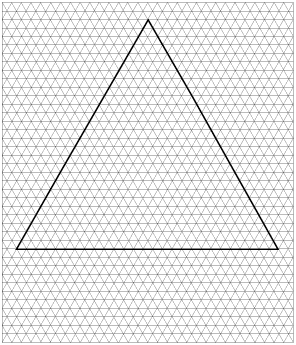
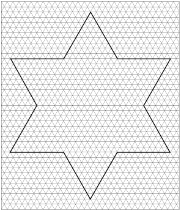

The first one is shown below. You start with an equilateral
triangle, then go 1/3 of the way along each side, then add a smaller equilateral
triangle, protruding out from every side to get the next figure. The second
figure is shown also.

Follow the same procedure to obtain the third and fourth snowflake. You probably should have some triangular graph paper to do this. The size of 27 units on each side of the original equilateral triangle works well.
I recommend calling the area of the the first figure 1 unit of area, and the perimeter of the first figure 1 unit of length. Find the area and perimeter of figures 1, 2, 3, and 4, writing each as an infinite series to help you do that. You'll be using what you've done in Chapter 1.